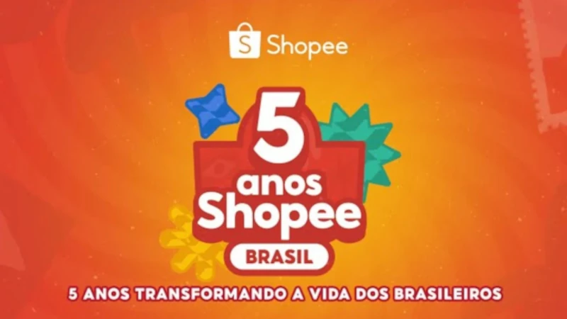
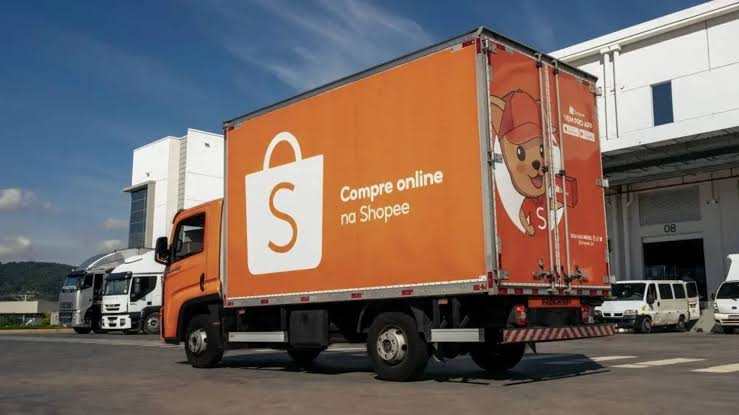

História da Shopee: Do Sudeste Asiático para o Brasil
Você com certeza já deve ter comprado algo na Shopee ou pelo menos ouvido a famosa musiquinha dos comerciais de TV. Mas você sabe de onde surgiu essa gigante do e-commerce, como funciona a sua logística e o motivo do seu sucesso estrondoso no Brasil? Acompanhe este artigo para entender a trajetória completa dessa plataforma.
De onde veio a Shopee?
A Shopee nasceu em 2015, em Singapura. Ela foi criada pelo empresário Forrest Li como parte do Sea Group (anteriormente chamado Garena), um conglomerado de tecnologia amplamente conhecido pelo desenvolvimento de jogos eletrônicos, como o famoso game Free Fire. A ideia inicial era criar um marketplace com foco total no uso em smartphones (mobile-first), unindo compras online a recursos interativos de redes sociais e jogos.
Linha do tempo e expansão
2015: Lançamento da Shopee em Singapura e rápida expansão para países vizinhos como Tailândia, Tailândia, Malásia, Vietnã, Filipinas e Indonésia.
2017: O Sea Group (empresa-mãe) abre capital na Bolsa de Valores de Nova York (NYSE), captando recursos para acelerar o crescimento da marca
2019: A Shopee desembarca no Brasil, seu primeiro mercado fora da Ásia.
2020: Durante a pandemia, a plataforma abre espaço para vendedores brasileiros se cadastrem, mudando o perfil da operação no país.
2022 em diante: Investimento massivo em infraestrutura logística própria e centros de distribuição por todo o território nacional.
Como funciona a plataforma?
A Shopee opera no modelo de marketplace, conectando compradores a vendedores independentes (sejam pessoas físicas, pequenos comerciantes ou grandes marcas). O grande diferencial da empresa sempre foi a "gamificação": os usuários ganham Moedas Shopee ao cumprir missões diárias e jogar minigames dentro do aplicativo. Essas moedas podem ser convertidas em descontos reais nas compras.
Além disso, o sistema conta com a Garantia Shopee, onde o pagamento fica retido com a plataforma e só é repassado ao vendedor após o cliente receber e confirmar que o produto está em perfeitas condições.
Shopee no Brasil
Quando chegou ao Brasil no final de 2019, a plataforma era vista apenas como um site de compras internacionais (produtos vindos da China). Porém, a empresa rapidamente mudou sua estratégia para atrair comerciantes locais. Atualmente, mais de 85% a 90% das vendas realizadas na Shopee Brasil vêm de vendedores nacionais. A marca também criou a seção "Shopee Oficial", reunindo grandes lojas e fabricantes com garantia de nota fiscal e produtos originais.

A logística por trás da Shopee
A entregar milhões de pacotes diariamente exige uma operação extremamente complexa. A logística da Shopee funciona em uma cadeia bem estruturada:

- Agências e Hubs de Coleta: Locais parceiros espalhados pelas cidades onde os vendedores deixam os produtos vendidos.
- Centros de Distribuição (CDs): Grandes galpões onde robôs e esteiras automatizadas realizam a triagem e o agrupamento das encomendas por região.
- Transporte Express e Aéreo: Utilização de frotas rodoviárias e rotas aéreas dedicadas para levar as encomendas rapidamente entre diferentes estados.
- Entrega Final (Last-Mile): Etapa realizada pela Shopee Xpress, entregadores parceiros e Correios para garantir que o pacote chegue à porta do cliente.
Então é isso! Espero que você tenha gostado de conhecer a história, o funcionamento e os bastidores logísticos que transformaram a Shopee em um gigante do comércio eletrônico mundial.